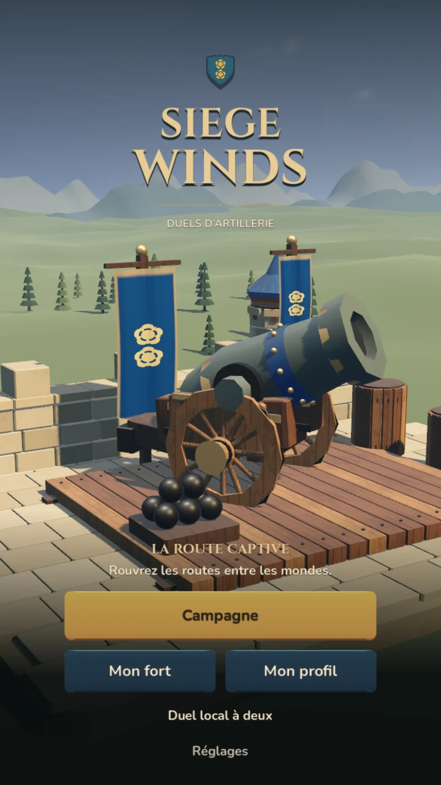
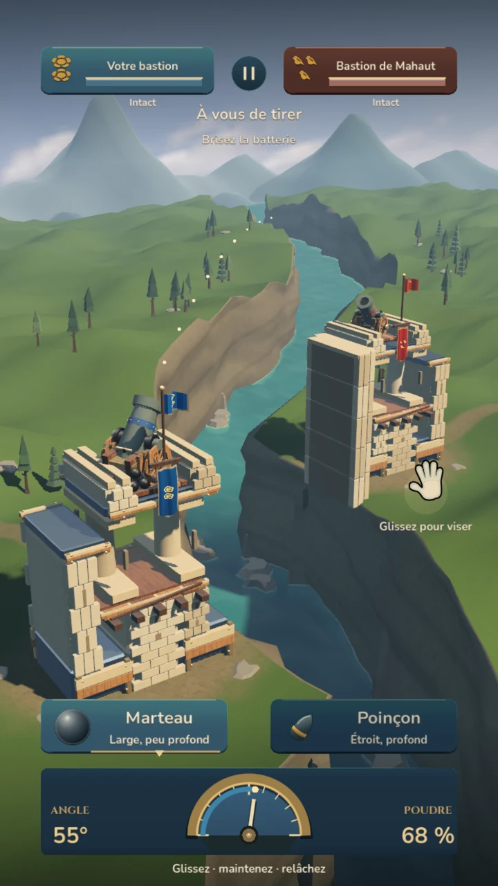
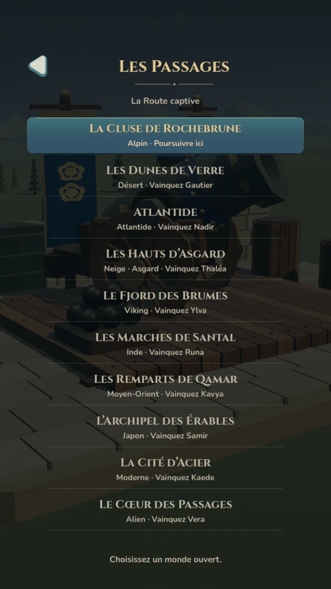
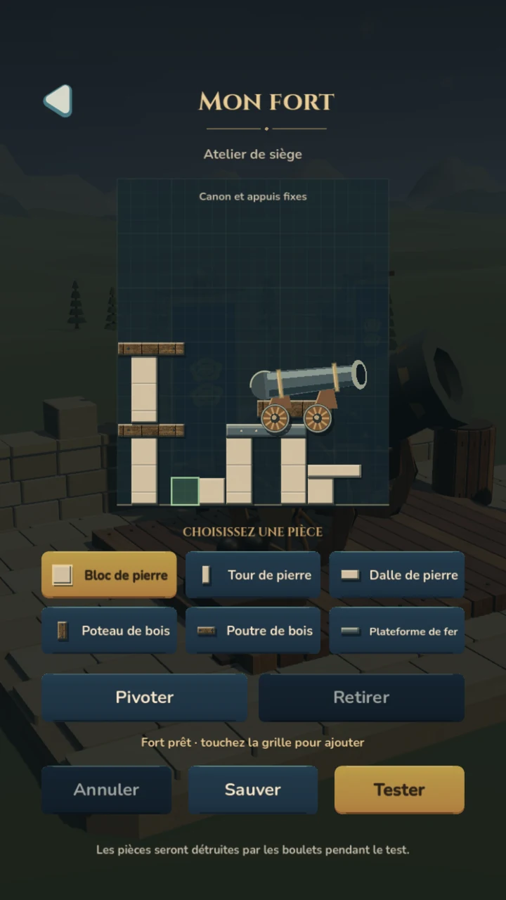
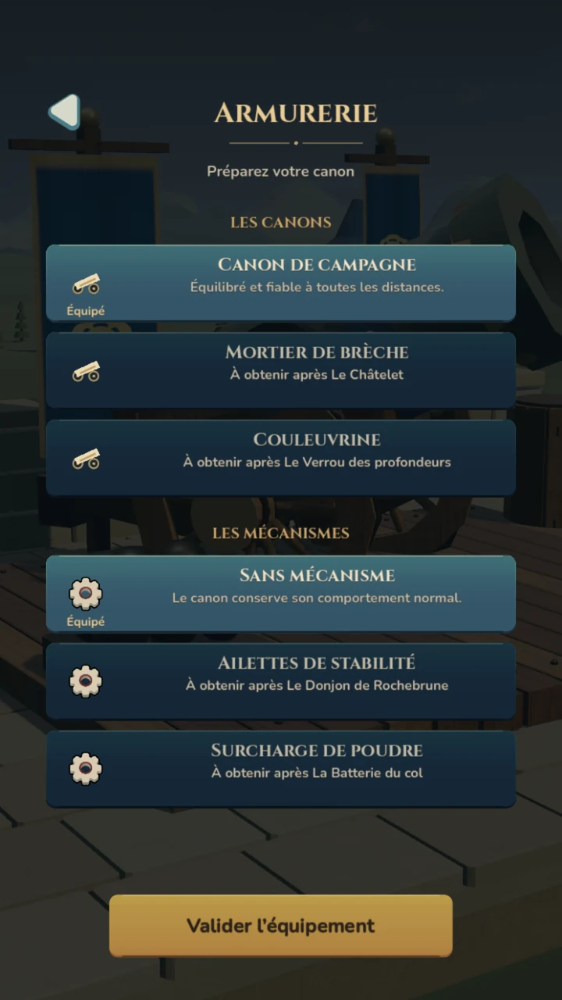

الفصل القادم من Siege Winds
سدّد. أطلق.
ابنِ حصنك.
تبدأ مبارزة المدافع بطلقتك التالية. اختر القذيفة، سدّد، اضبط كمية البارود وراقب أثر الضربة.
عرض النسخة الثانية · التحديث قادم
واجهة النسخة الثانية حاليًا بالفرنسية. التحديث قادم إلى iPhone وAndroid.

لعب حقيقي
طلقتك.
وأثرها.
لقطات حقيقية من النسخة الثانية القادمة. مبارزات المدافع والحملة وورشة الحصن كما تظهر في اللعبة.
سدّد
اسحب لضبط زاوية المدفع.
اضبط الشحنة
اضغط مطولًا لتحديد البارود، ثم ارفع إصبعك للإطلاق.
راقب الضربة
شاهد القذيفة تضرب حصن الخصم واستعد للطلقة التالية.


الحملة
افتح الطريق.
مبارزة بعد أخرى.
اختر عالمًا مفتوحًا، ادخل المبارزة وتقدّم في الحملة. تبدأ الرحلة بين أسوار روشبرون الجبلية.
تفضّل تحدّي صديق؟ تبادلا الأدوار على الهاتف نفسه في وضع المبارزة المحلية للاعبين.
حصني
ضع الحجر.
واختبر دفاعاتك.
ابنِ بالحجر والخشب والحديد. ضع القطع ودوّرها، احفظ حصنك ثم اختبر صموده أمام القذائف.


التجهيزات والمظاهر
جهّز مدفعك.
وامنحه طابعك.
اختر مدفعك وآلياته من الترسانة. استعرض المظاهر التجميلية في ملفك الشخصي وخصّص تجهيزاتك.
تعرض الترسانة تجهيزات تفتحها بالتقدّم في الحملة. المظاهر التجميلية منفصلة عن تجهيزات القتال.
تابع الفصل القادم
النسخة الثانية
قيد التحضير.
تجد النسخة الحالية من Siege Winds في المتاجر. تحديث النسخة الثانية ما زال قيد التحضير.
لقطات حقيقية من النسخة الثانية. أُنشئت بعض الرسومات بمساعدة الذكاء الاصطناعي.